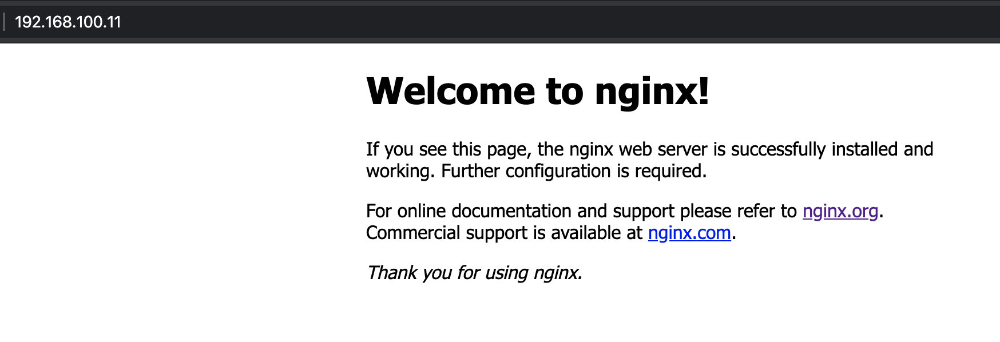
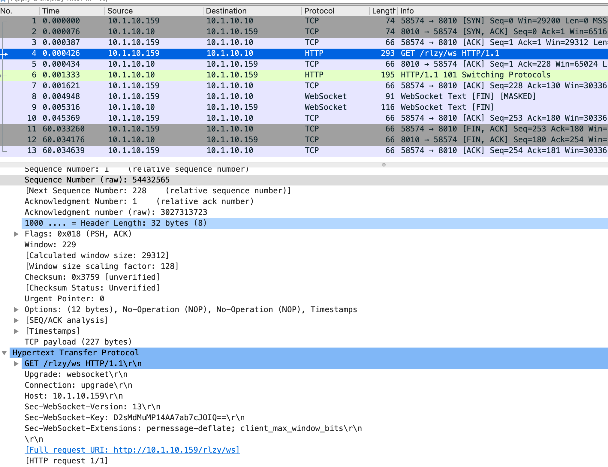

[nginx]
name=nginx repo
baseurl=http://nginx.org/packages/mainline/centos/7/$basearch/
gpgcheck=0
enabled=1NGINX 入门到精通
Table of Contents
概念
什么是 NGINX
Igor Sysoev 于 2004 年开源的一个项目，最初该项目主要要解决的是 C10K问题（超过 10,000 个并发连接处理的问题）；后来 NGINX 公司成立，持续开发并创立了一个商业版本 NGINX Plus。
Nginx 主要有三种使用场景：
-
高性能 web 服务器 - 目前超过 50% 的 TOP 1000 网站使用 Nginx。
-
反向代理 - SSL/TLS Termination，Content caching and compression 3。负载均衡
NGINX vs. Apache
| NGINX | Apache |
|---|---|
NGINX configuration language — directive based |
Apache configuration language — directive based |
One processing method |
Multiple processing methods |
Supports dynamic, third-party modules |
Supports dynamic, third-party modules |
Similar performance for dynamic content |
Similar performance for dynamic content |
Faster for serving static files |
Slower for serving static files |
No concept equivalent to .htaccess files |
Concept of .htaccess files for directory localized configuration |
NGINX vs. NGINX Plus
安装
二进制安装
本部分在 CentOS 7 上二进制安装。
1. 创建
/etc/yum.repos.d/nginx.repo 内容如下|
Note
|
如果选择安装 stable 则修改 baseurl 为 http://nginx.org/packages/stable/centos/7/$basearch/
|
2. 安装
yum update -y
yum install -y nginx3. 开机启动
systemctl start nginx && systemctl enable nginx && systemctl status nginx4. 访问测试

编译安装
1. 下载源代码
wget https://nginx.org/download/nginx-1.20.0.tar.gz
tar -xvf nginx-1.20.0.tar.gz && cd nginx-1.20.02. 安装编译所需依赖包
yum groupinstall 'Development Tools'
yum install zlib-devel -y
yum install pcre-devel -y3. 编译
# ./configure --help
# ./configure --prefix=/root/nginx
...
nginx path prefix: "/root/nginx"
nginx binary file: "/root/nginx/sbin/nginx"
nginx modules path: "/root/nginx/modules"
nginx configuration prefix: "/root/nginx/conf"
nginx configuration file: "/root/nginx/conf/nginx.conf"
nginx pid file: "/root/nginx/logs/nginx.pid"
nginx error log file: "/root/nginx/logs/error.log"
nginx http access log file: "/root/nginx/logs/access.log"
nginx http client request body temporary files: "client_body_temp"
nginx http proxy temporary files: "proxy_temp"
nginx http fastcgi temporary files: "fastcgi_temp"
nginx http uwsgi temporary files: "uwsgi_temp"
nginx http scgi temporary files: "scgi_temp"
# make
# make install4. 编辑 ~/nginx/conf/nginx.conf, 修改监听端口为 8001
server {
listen 8001;
server_name localhost;5. 启动
cd ~/nginx
./sbin/nginx6. 访问测试
curl localhost:8001基本使用场景
配置一个静态资源 Web 服务器
/etc/nginx/conf.d/book.conf
server {
listen 8080;
server_name book.example.com;
#charset koi8-r;
access_log /var/log/nginx/book.access.log main;
location / {
root /usr/share/nginx/book;
autoindex on;
#set $limit_rate 10k;
index index.html;
}
error_page 404 /404.html;
# redirect server error pages to the static page /50x.html
#
error_page 500 502 503 504 /50x.html;
location = /50x.html {
root /usr/share/nginx/html;
}
}配置一个具有缓存功能的反向代理
1. 查看上游服务
curl http://192.168.100.71:8080/v3/api-docs
curl http://192.168.100.71:8080/api/fruits/22. /etc/nginx/conf.d/fruits.conf
upstream local {
server 192.168.100.71:8080;
}
proxy_cache_path /var/cache/nginx/cache keys_zone=my_cache:10m;
server {
listen 80;
server_name fruits.example.com;
access_log /var/log/nginx/fruits.access.log main;
location / {
proxy_set_header Host $proxy_host;
proxy_set_header X-Real-IP $remote_addr;
proxy_set_header X-Forwarded-For $proxy_add_x_forwarded_for;
proxy_cache my_cache;
proxy_cache_key $host$uri$is_args$args;
proxy_cache_valid 200 302 10m;
proxy_pass http://local;
}
}3. 訪問測試
curl http://192.168.100.11/api/fruits/2
// make sure the cache is working, force shutdown the upstream server, execute curl again
curl http://192.168.100.11/api/fruits/2配置 realip 模块
1. /etc/nginx/conf.d/realip.conf
server {
listen 80;
server_name realip.example.com;
access_log /var/log/nginx/realip.access.log main;
error_log /var/log/nginx/realip.error.log debug;
set_real_ip_from 192.168.100.1;
real_ip_recursive on;
real_ip_header X-Forwarded-For;
location / {
return 200 "Client real ip: $remote_addr\n";
}
}2. 测试
$ curl -H 'X-Forwarded-For: 1.1.1.1,192.168.100.1' http://192.168.100.11
Client real ip: 1.1.1.1配置一个 HTTP Basic Authentication 的 Web 服务器
1. 生成密码文件
// install
yum install httpd-tools -y
// generate password file
htpasswd -cb http-basic-auth.pass admin admin
htpasswd -b http-basic-auth.pass user user2. /etc/nginx/conf.d/basicauth.conf
server {
listen 80;
server_name auth.example.com;
access_log /var/log/nginx/auth.access.log main;
location / {
satisfy any;
auth_basic "BASIC AUTH";
auth_basic_user_file http-basic-auth.pass;
deny all;
}
location /test {
return 200 "YES\n";
}
}3. 访问测试
$ curl -u "admin:admin" http://192.168.100.11/test
YESWebdocket 代理
本部分内参参照 https://www.nginx.com/blog/websocket-nginx/ 和 https://www.nginx.com/blog/nginx-websockets-performance/ 中内容。
本部分部署拓扑示意如下：
Server |
IP |
功能 |
server1 |
10.1.10.9 |
Websocket Client |
server2 |
10.1.10.159 |
Nginx Webdocket 代理 |
server3 |
10.1.10.10 |
Websocket Server |
Websocket Server
1. 安装 node 及 ws 环境
sudo apt-get install nodejs npm
mkdir server && cd server
npm install ws2. 创建 server.js，内容如下
console.log("Server started");
var Msg = '';
var WebSocketServer = require('ws').Server
, wss = new WebSocketServer({port: 8010});
wss.on('connection', function(ws) {
ws.on('message', function(message) {
console.log('Received from client: %s', message);
ws.send('Server received from client: ' + message);
});
});3. 启动
node server.jsNginx Webdocket 代理配置
http {
...
map $http_upgrade $connection_upgrade {
default upgrade;
'' close;
}
upstream websocket {
server 10.1.10.10:8010;
}
server {
listen 8020;
location / {
proxy_pass http://websocket;
proxy_http_version 1.1;
proxy_set_header Upgrade $http_upgrade;
proxy_set_header Connection $connection_upgrade;
proxy_set_header Host $host;
}
}
}Websocket Client
1. 安装 node 及 ws 环境
sudo apt-get install nodejs npm
mkdir client && cd client
npm install ws2. 创建 client.js，内容如下
const WebSocket = require('ws')
const url = 'ws://10.1.10.159:8020/rlzy/ws'
const connection = new WebSocket(url)
connection.onopen = () => {
connection.send('Message From Client')
}
connection.onerror = (error) => {
console.log(`WebSocket error: ${error}`)
}
connection.onmessage = (e) => {
console.log(e.data)
}3. 启动 Client 通过代理和Server端通信
node client.jsWebsocket Server 端抓包查看底层通信

Web Server
Reverse Proxy
Load Balancer
安全
运维
Logging
性能调优
**